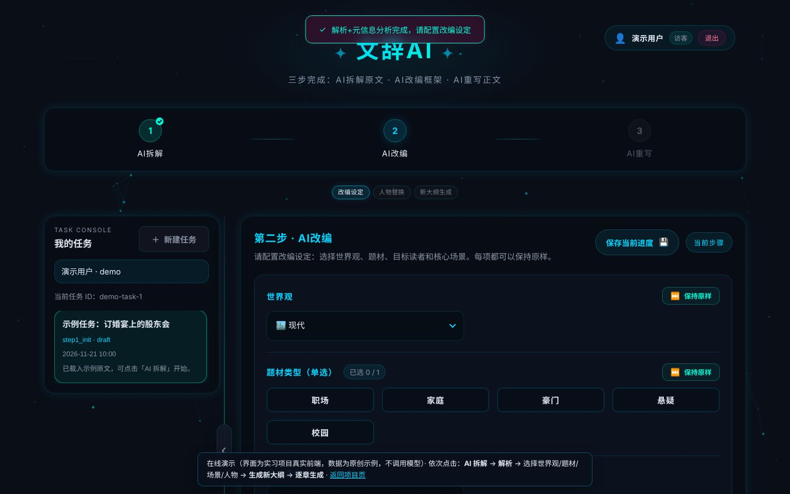

作品集 / 文辞 AI 小说生成工作台
实习 · 杭州龙特星辰科技
文辞 AI 小说生成工作台
把长篇小说生成拆成“拆解 → 改编 → 逐章重写”三段工作流，每章先检索参考片段、生成场景卡，再写正文。
长文本生成检索增强工作流编排Flask全栈联调
工作台源码属于实习公司，这里只公开界面演示。演示使用的是公司项目的真实前端，后端换成了本地示例数据：小说、参考片段都是为演示原创的文本，不调用模型。
背景与问题
从一段梗概一次性生成长篇，结构容易松散，人物状态前后不一致；只调提示词时，很难判断问题出在“没检索到合适的参考”，还是“检索到了但生成没用上”。工作台要让编辑能一步步检查、修改、局部重跑。
整体流程
- AI 拆解原文 → 标准化框架（梗概、结构、人物小传、钩子）
- AI 改编选择世界观、题材、核心场景，替换人物，生成新大纲
- 故事蓝图核心冲突、情绪曲线、章节计划
- 逐章检索按章节功能构造多路查询，召回后融合、重排
- 场景卡开场切入、关键拍点、章尾钩子
- 生成与交接逐章生成、润色，章节摘要传给下一章
我做了什么
- 负责第三阶段“逐章重写”链路：故事蓝图、章节计划、场景卡、逐章生成与章节摘要交接，让每一章都有明确的输入和可检查的中间产物。
- 实现检索增强：按“对话 / 动作 / 情绪 / 环境 / 钩子”等章节功能构造多路查询，稠密语义召回与词项召回结合，用 RRF 融合后再按标签和来源重排。
- 为每章记录查询、候选、最终注入的片段和生成结果，用同一个任务 ID 串起来，定位问题时先找第一个偏离预期的环节。
- 参与把写作引擎接入工作台：Flask 后端通过 subprocess + JSON 桥接独立引擎，正文生成以异步任务运行，前端轮询任务状态。
- 参与前后端联调，以及章节保存、单章重生成、选中段落改写等编辑功能的接口对接。
关键设计与取舍
分章生成，而不是一次写完整本
做法蓝图 → 章节计划 → 场景卡 → 正文，每层都能人工修改后再往下走。
原因与代价每一轮输出有边界，局部出错可以只重跑一章；代价是调用次数更多、章节之间有串行依赖，所以需要章节摘要做状态交接，并控制前一章的错误向后传。
把“检索到”和“用上了”分开看
做法日志分别记录候选片段和最终进入提示词的片段。
原因与代价候选里有、注入里没有，说明问题在过滤或上下文预算；注入了却没体现在正文里，问题才在提示词或生成。这样调优有方向，不只是反复改提示词。
长任务异步化，前端轮询
做法启动任务立即返回 job_id，前端每 1.8 秒拉一次状态，逐章显示进度。
原因与代价整本生成耗时较长，同步请求会超时；异步任务还能在刷新页面后按任务 ID 找回进度。
界面截图



常见追问
日志里检索到了目标片段，为什么生成还是没用上？
先看这段文字最终有没有进入模型输入：候选会按用途排序、去重，再受总字符预算限制，所以“候选里有”和“注入了”是两个不同的观察。已经注入的话，再检查提示词和生成输出。
Dense、Sparse、RRF 分别起什么作用？
稠密召回补语义相近的片段，词项召回补精确的设定和说法；两路分数尺度不同，RRF 只用排名融合，避免直接比较分数。融合后再按章节功能和标签做业务重排。